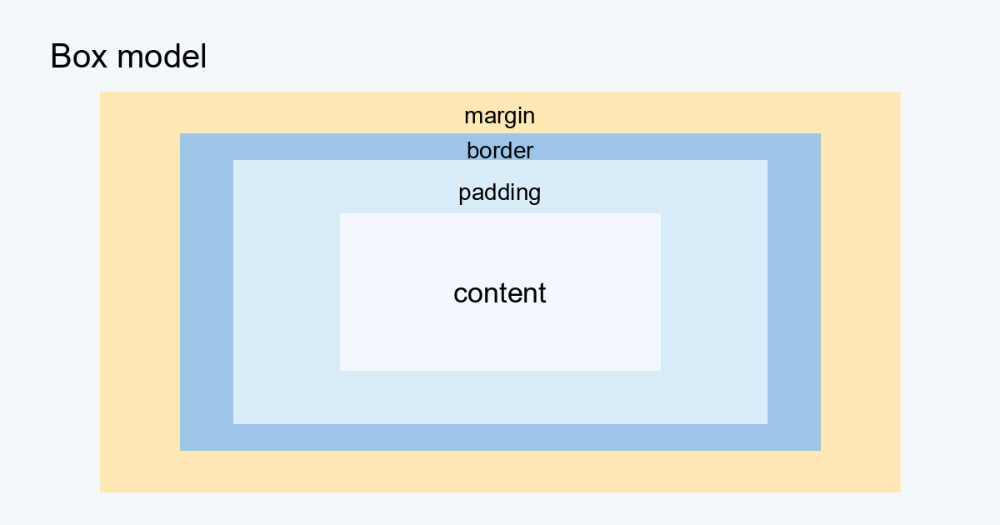

HTML + CSS + JavaScript self assessment
1. The ten most useful HTML tags for me
Each item names one tag, says what the tag is, and points at where this page uses it. The next most useful are h2 to h6, ol, header, nav, main, and footer.
2. Head and heading tags that matter for SEO
The head holds data about the document instead of content for the screen. Search engines read it first, then read the heading outline. This page uses every tag below.
- title. Gives the title of the whole document. A search result and the browser tab both show it.
- meta name="description". Sums the page up in one line. A search result prints it under the title.
- meta name="viewport". Lays the page out at the width of the device, so a phone screen gets a readable page. Search engines index the mobile version first, so the phone layout decides the ranking.
- meta charset="utf-8". Tells the browser which character encoding the file uses. utf-8 covers nearly every character in any language. Text that a crawler cannot decode cannot be indexed.
- meta name="author". Names who wrote the page, so a reader with a question knows who to ask. It is useful metadata, not a strong search signal.
- meta name="robots". Tells a crawler whether to index this page and whether to follow its links. This page says index and follow, so it can appear in results at all.
- link rel="canonical". Names the one address that counts as the real home of this page. A search engine then credits that address instead of splitting the credit across duplicates.
- meta property="og:title", "og:description", "og:image", "og:url". Set the title, text, picture, and address of the preview card on social sites. Without them a shared link shows whatever text and picture the crawler picks first. A clear card earns more clicks and more links back to the page.
- html lang="en". Names the main language of the document. Search engines index it better and screen readers pronounce it right.
- One h1 and headings in order. The h1 titles the page content and belongs once per page. Crawlers build the outline from the heading order.
- alt on every img. Describes the picture in words for anyone who cannot see it. A crawler has no other text for an image.
3. A 3 by 3 grid with divs and spans and no CSS
A block box breaks onto a new line and fills the width of its container. So each div becomes one row. An inline box stays on the current line beside its neighbours. So the three spans inside a div become three cells. No table and no CSS rule build this grid.
4. Box model gallery
Every box is four nested areas. From the middle out:
| Area | Where | What it does | Property |
|---|---|---|---|
| content | the middle | holds the text or the image, sized by width and height | width, height |
| padding | inside the border | clear space around the content, painted with the background | padding |
| border | the edge | the line drawn around the padding | border |
| margin | outside the border | transparent space that pushes other boxes away | margin |

| box-sizing | What width means |
|---|---|
| content-box, the default | the content only, padding and border add on top |
| border-box, used on this page | content plus padding plus border, margin still outside |
box-sizing does not inherit. This page sets border-box on html, then one rule gives every element box-sizing inherit, except the grid in Part 3.
| Block box, a div | Inline box, a span | |
|---|---|---|
| new line | starts one | stays in the line |
| width, height | apply | ignored |
| top and bottom margin | apply | ignored |
| top and bottom padding, border | push lines apart | drawn, but do not push lines apart |
| left and right padding, border, margin | apply | apply, move the text beside it |
Gallery. Rows change one area, the last row all three. Dashed grey line, the margin edge. Blue, the border. Light blue band, the padding. Pale middle, the content.
5. The same text in six font sizes
Each item carries its own inline style attribute. Two units are absolute, px and pt. An absolute unit does not depend on a parent element or on the window. Four units are relative, em, rem, percent, and vw. A relative unit takes its size from something else, such as a parent element or the window. JavaScript appends the computed pixel size to each item.
- The quick brown fox jumps over the lazy dog. 12px, absolute. One px is 1/96 of an inch. It is the one absolute unit in common use on screen. Use px for a size that must hold steady, such as a 12px chart caption.
- The quick brown fox jumps over the lazy dog. 14pt, absolute. A point is 1/72 of an inch. A point comes from print, so pt fits paper better than a screen. Use pt in a print stylesheet, such as 14pt body text.
- The quick brown fox jumps over the lazy dog. 1.5em, relative to the parent font size. For a font size, one em is the parent font size. For anything else, one em is the font size of the element itself. Nesting compounds it, because each level multiplies its parent again. So 1.5em grows at every step, while a value under one would shrink at every step. Use em for spacing that scales with nearby text, such as 0.5em padding in a button.
- The quick brown fox jumps over the lazy dog. 1.25rem, relative to the root font size. The name stands for root em. It always reads the font size of the root element, so nesting never compounds it. Use rem for text sizes that repeat across the page, such as h2 at 1.5rem.
- The quick brown fox jumps over the lazy dog. 80%, relative to the parent. A percentage is always a fraction of some other value. For a font size that other value is the parent font size. Use a percentage for text that should follow its parent, such as a footnote at 80%.
- The quick brown fox jumps over the lazy dog. 3.5vw, relative to the viewport width. One vw is one percent of the viewport width. The size changes whenever the window changes. Use vw for a hero heading that shrinks on a phone. Resize the window to watch it change.
6. Positioning options
Normal flow stacks boxes top to bottom. The position property moves a box out of that order. All five values are live here. Scroll the page and watch the sticky note.
position: sticky; top: 3rem; pins under the navbar while this panel is on screen
position: static; stays where normal flow puts it, top and left do nothing
position: relative; top: 10px; left: 20px; shifted from its slot, the slot stays empty
absolute
position: absolute; top: 0; right: 0; the badge, measured from the yellow box, its nearest positioned ancestor
position: fixed; bottom: 0; the footer, measured from the viewport
Scroll on. The sticky note holds until this panel leaves the screen.
| Value | Where the box goes | Keeps its space | Use it for |
|---|---|---|---|
| static | where normal flow puts it | yes | almost everything |
| relative | its flow spot, then shifted by top, left, bottom, right | yes, the gap stays | small nudges, the reference box for an absolute child |
| absolute | measured from the nearest positioned ancestor, or the page if none | no | badges, tooltips, close buttons |
| sticky | in flow until it reaches its threshold, then pinned while its parent is on screen | yes | navbars, table headings |
| fixed | measured from the viewport, stays put while the page scrolls | no | footer bar, back to top button |
A box out of flow can cover another. z-index picks the top one, the navbar at 10, the sticky note at 1.